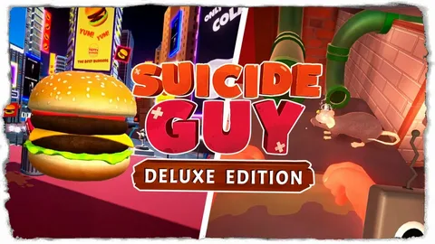

Suicide Guy, Chubby Pixel tarafından geliştirilen birinci şahıs bulmaca oyunudur. Oyunda rüyaların içinde sıkışan bir adamı kontrol eder ve farklı bölümlerdeki bulmacaları çözerek çıkış yolunu bulmaya çalışırsın. Fizik tabanlı oynanışı ve absürt mizahıyla dikkat çeken oyun, her bölümde farklı mekanikler ve ilginç sahneler sunar. Bu tarz oyunları ücretsiz olarak BallasNetten indirebilirsiniz.
SİSTEM GEREKSİNİMLERİ
Minimum
- OS: Windows XP SP3
- İşlemci: Intel Dual-Core 2.6 GHz
- RAM: 1 GB
- Ekran Kartı: NVIDIA GeForce 8500 GT
- Disk: 2 GB boş alan
Önerilen
- OS: Windows 7 ve üzeri
- İşlemci: Quad-Core Processor
- RAM: 2 GB
- Ekran Kartı: NVIDIA GeForce GTX 280
- Disk: 2 GB boş alan
LİNKLER
RESMİ İNDİRME LİNKLERİ
BENZER OYUNLAR
Suicide Guy Nedir?
Suicide Guy, Chubby Pixel tarafından geliştirilen birinci şahıs bulmaca oyunudur. Oyunda sürekli uykuya dalan bir adamın gördüğü garip rüyaların içine giriyorsun. Amaç ise her bölümde etraftaki nesneleri kullanarak bulmacaları çözmek ve karakteri uyandıracak yolu bulmak. Oyun ciddi bir korku atmosferinden çok absürt mizah ve eğlenceli fizik mekanikleri üzerine kurulmuş. Bölümler ilerledikçe farklı mekanikler açılıyor ve her harita birbirinden farklı ortamlar sunuyor.
Oyunun sistem gereksinimleri oldukça düşük olduğu için eski bilgisayarlarda bile rahat şekilde çalışabiliyor. Ayrıca oynanış tamamen hikâye anlatımından çok bölüm içindeki etkileşimlere odaklanıyor. Bazı bölümlerde objeleri taşıman, bazı yerlerde fizik kurallarını kullanman gerekiyor. Bu da oyunu klasik bulmaca oyunlarından daha eğlenceli hâle getiriyor.
Suicide Guy Oynanış Özellikleri
- Fizik tabanlı eğlenceli bulmacalar.
- Birbirinden farklı rüya temalı bölümler.
- Etkileşime açık nesneler ve çevre mekanikleri.
- Absürt mizah ve komik sahneler.
- Düşük sistem gereksinimiyle akıcı oynanış.
Suicide Guy Hikayesi
Oyunda ana karakter elindeki içeceği dökmeden önce uykuya dalıyor ve kendisini birbirinden garip rüyaların içinde buluyor. Her bölümde farklı bir ortam ve farklı bulmacalar yer alıyor. Hikâye ciddi bir yapı yerine daha çok mizahi ve eğlenceli bir anlatım kullanıyor.
Suicide Guy Sistem Gereksinimleri
Suicide Guy düşük donanımlı bilgisayarlarda da oynanabilen oyunlardan biridir. Çok yüksek ekran kartı veya işlemci istemediği için eski sistemlerde bile akıcı çalışabilir. Özellikle düşük boyutlu indie oyun seven oyuncular için ideal seçeneklerden biri olarak görülür.
Suicide Guy Kaç GB?
Oyun oldukça düşük boyutlu yapıya sahiptir ve depolama tarafında fazla alan istemez. SSD veya HDD üzerinde kısa sürede kurulabilir ve ekstra yüksek depolama ihtiyacı oluşturmaz. Oyunun zip dosyası 1.6 GB dır.
Bölüm Yapısı
Oyunda her bölüm farklı bir rüya temasına sahip. Bazı bölümlerde dev objeler arasında dolaşırken bazı bölümlerde uzay veya fantastik ortamlarda bulmaca çözüyorsun. Bu çeşitlilik sayesinde oyun kendini tekrar etmiyor ve ilerledikçe yeni fikirler sunmaya devam ediyor.
Fizik Mekanikleri
Suicide Guy’ın en dikkat çeken taraflarından biri fizik sistemi. Çevredeki nesneleri taşıyabilir, itebilir veya farklı şekillerde kullanabilirsin. Bazı bulmacalar tamamen bu fizik etkileşimleri üzerine kurulu olduğu için deneme yanılma mantığı oyunun önemli bir parçası hâline geliyor.
Oyun Deneyimi
Oyun genel olarak rahat ve eğlenceli bir deneyim sunuyor. Zorlayıcı rekabet sistemi yerine keşif, deneme ve bulmaca çözme ön planda tutulmuş. Özellikle kısa süreli oynanışlarda kafa dağıtmalık bir yapıya sahip olmasıyla dikkat çekiyor.
Suicide Guy İndir
LİNK 1,2 veya 3 sayesinde oyunu kısa sürede kurup direkt oynayabilirsin. Bölüm çeşitliliği, fizik tabanlı bulmacaları ve mizahi yapısıyla indie oyun seven oyuncuların ilgisini çeken yapımlardan biridir. Tek yapmanız gereken dosyaları kurmaktır.
Güvenlik ve Oyun Dosyaları
Oyun dosyaları kontrol edilerek paylaşılmıştır. Kurulum dosyaları içerisinde zararlı yazılım veya ekstra program bulunmaz. Herhangi bir şüpheniz varsa discord sunucumuza gelebilirsiniz.